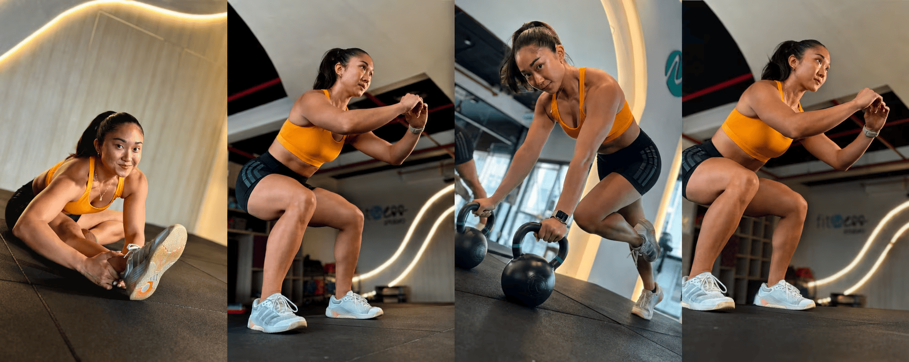

Olvídate de separar el gimnasio del cardio. El entrenamiento híbrido se ha convertido en una de las formas más completas de entrenar, combinando entrenamiento de fuerza y resistencia en una sola sesión.
En Perú-y especialmente en Lima-cada vez más personas están integrando rutinas híbridas en su día a día, combinando ejercicios de piernas, entrenamiento funcional y cario para mejorar su rendimiento físico. Ya no se trata solo de verse bien, sino de moverse mejor, rendir más y sentirse fuerte.
Por eso, el workout híbrido continúa en tendencia en 2026: porque tu acondicionamiento físico y te prepara para cualquier desafío.
¿Qué es el entrenamiento híbrido y por qué mejora tu rendimiento?
El entrenamiento híbrido es la combinación estratégica de entrenamiento de fuerza y resistencia dentro de na misma sesión.
No se trata de hacer pesas un día y cardio otro, si no de integrar ambos estímulos. Una rutina híbrida bien estructurada permite trabajar la fuerza muscular, la resistencia y la capacidad cardiovascular al mismo tiempo.
 |
 |
No se trata de entrenar más.
Se trata de entrenar mejor.
¿El entrenamiento híbrido ayuda a mejorar la resistencia y fuerza al mismo tiempo?
Sí, el entrenamiento híbrido combina ejercicios de fuerza y resistencia, mejorando ambas capacidades en una sola rutina.
¿Cómo empezar una rutina híbrida de piernas si soy principiante?
Puedes iniciar con una rutina hibrida de piernas simple, combinando ejercicios de piernas básicos con cardio de baja intensidad.